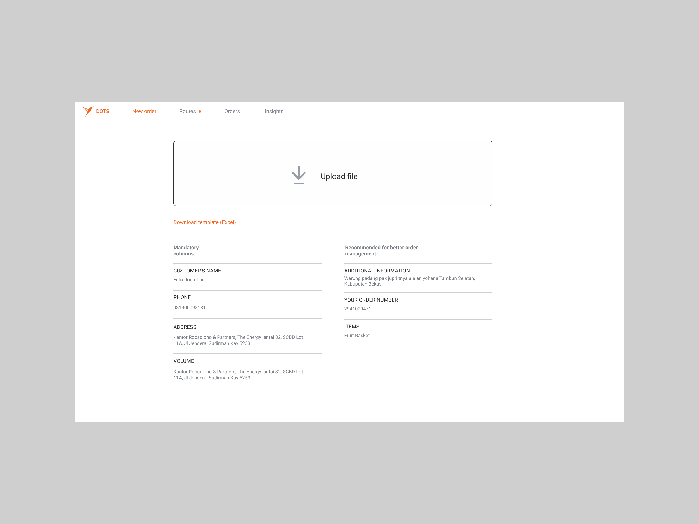
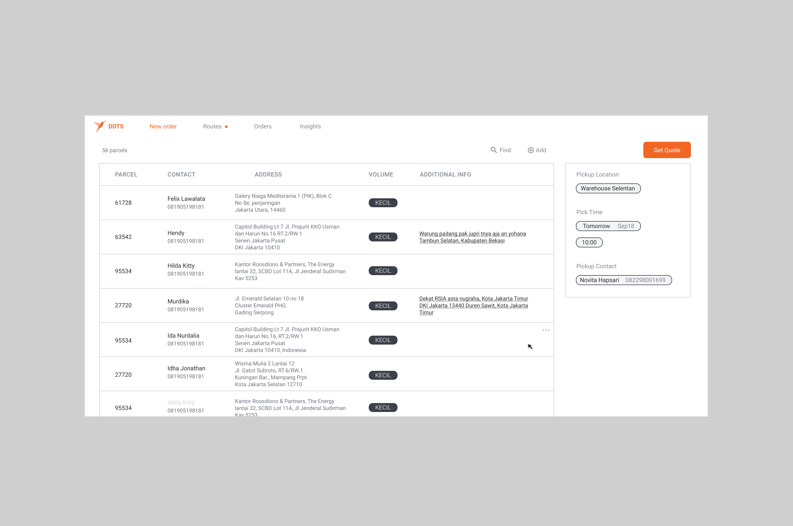
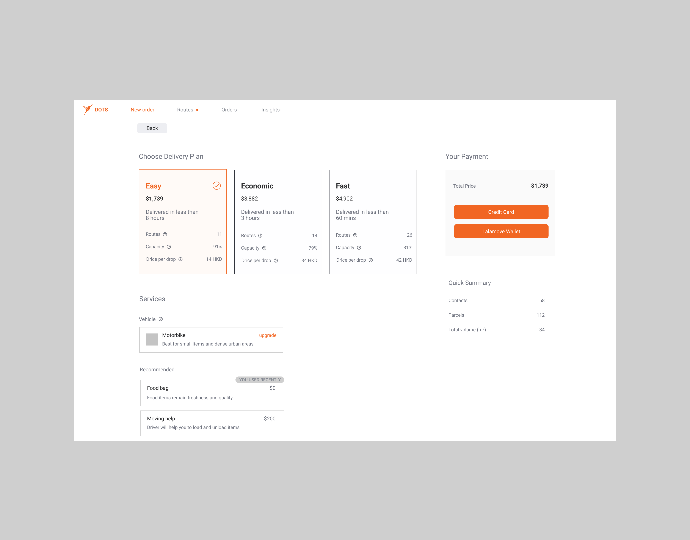
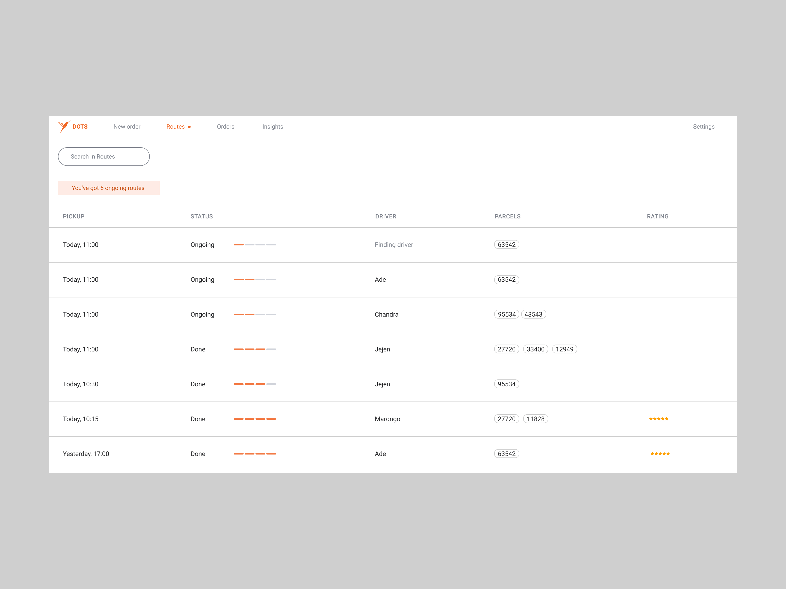

The tool that changed warehouses in SEA
BACKGROUND
Placing orders on Lalamove's consumer products is tedious for clients who need to deliver items in large volumes. Furthermore, due to lack of internal tools, platform's ability to segment price is limited. As result, many customers see their prices high.
Lalamove launched an experimantal tool which optimized their delivery needs by providing efficient last mile delivery routes. It was used by local teams to create routes on behalf of selected business clients. It helped to automate complex internal processes and attract customers, which otherwise wouldn't be interested in platform.
I was part of the team on intersection of product, engineering and operations. We wanted to create functional product in the shortest amount of time. We launched after 2 months which became the fastest product launch in the company's history. we launched pivot in Singapore and Jakarta and soon it contributed to 5% of all orders placed on Lalamove platform within business segment.
NEXT STEP
We relieved some of the pain that customers felt when they requested deliveries but this still wasn't enought. Our ambition was to give them more control and flexibility over their delivery experience.
We wanted to give them self-serviced tool which places their orders efficiently without involving Lalamove team.
I designed a concept witch I presented across all company levels - from local teams based in cities, to top level management. It helped align key stakeholders on our vision.
CONCEPT
Focus of this mid-fidelity demo is to show:
- how user (most often warehouse manager) inputs delivery data
- how warehouse manager previews delivery details
- how warehouse manager can choose the most optimal delivery plan
- how warehouse manager monitors deliveries and tracks their progress in real time
- account setup
1. Clients usually plan their deliveries a day ahead after they collect orders. Warehouse manager requests deliveries by uploading a file (addresses, contacts, delivery instructions).
2. Things on client's side are always chaotic. Changes just before confirming orders are very common. Warehouse manager can always return to details and make edits, rather than restarting whole process from the beginning.
3. We found clients are looking either for the best price (same day delivery) or for speed. Our drivers can offer only one. Either it's fast, but driver needs to be compensated, or it's not urgent, but item will be delivered in given time window. Delivery plans help them land at the most desired option.
4. “Routes” help warehouse manager to monitor progress of deliveries updated in real time
 5. We saw clients had their own format of their data. We wanted to teach the app to recognize it and learn how clients call fields for addresses or delivery instructions (demo is inspired by client speaking Indonesian) rather than force clients to rename their data to input we can recognize.
Critical piece of information from client is size of parcel. This help us maximize capacity of our drivers.
This process is needed only to setup the account and for details when app has low confidence whether it can recognize input correctly.
This prototype explores how client can perform complex activities on platform easily, just with a few clicks. I have made a series of other prototypes (mobile app, image recognition,...) with the same purpose.